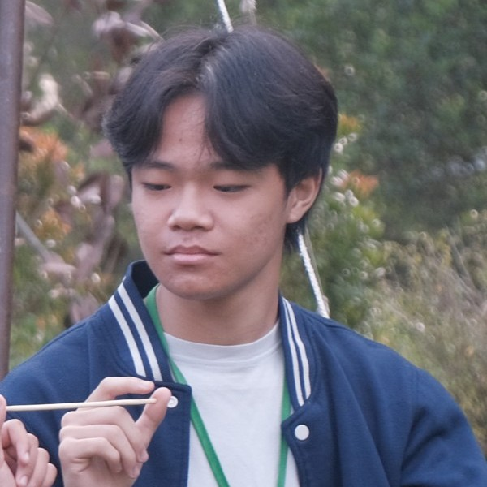

Anggota Kelompok

Callista Feliz Xu
X6 / 7

Sebastian Akiva Tjendra
X6 / 26

Warren Yohn
X6 / 30
Callista Feliz Xu
X6 / 7
Sebastian Akiva Tjendra
X6 / 26
Warren Yohn
X6 / 30
Harvey Moeis adalah seorang pengusaha sekaligus suami artis Sandra Dewi yang terseret dalam kasus korupsi besar terkait tata niaga timah di wilayah konsesi PT Timah Tbk periode 2015–2022. Ia diduga mengatur skema setoran ilegal melalui penyamaran biaya CSR dan menerima keuntungan pribadi dari aktivitas pertambangan liar. Jaksa menjeratnya dengan pasal korupsi dan pencucian uang, dengan dugaan kerugian negara yang mencapai ratusan triliun rupiah.